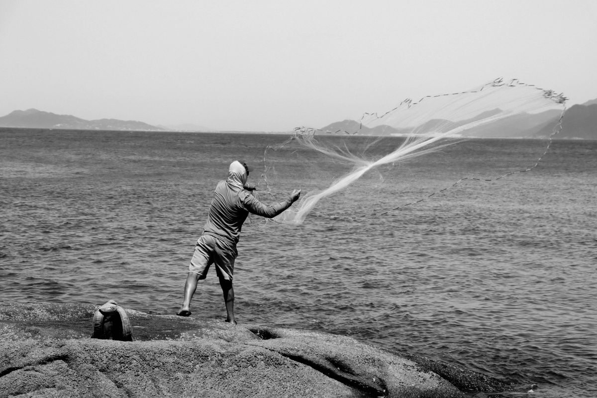

Sobre o restaurante
Uma cozinha de família que virou restaurante.
Nossa história
O restaurante abriu em 2009 no rancho de pesca da família do Seu Nelson, em Santo Antônio de Lisboa. Ele é pescador e a Dona Lurdes cuida da cozinha. O avô dela tinha um engenho de farinha aqui no bairro, e foi daí que veio o nome Pirão de Engenho.
No começo eram poucas mesas e só abria no almoço. Com o tempo aumentou, fizeram o salão e depois o deck na frente do mar. A comida continua a típica daqui, com ostra, camarão, peixe e pirão. As ostras são de um cultivo da baía e o camarão eles compram dos pescadores da ilha.

O que a gente não abre mão
- Ostra aberta só na hora de servir.
- Peixe e camarão comprados dos pescadores da ilha.
- Respeitar o defeso: cada peixe só entra no cardápio na época dele.
- Preço justo, para dar para voltar na semana seguinte.
Pequeno dicionário da casa
Alguns nomes do cardápio que nem todo mundo conhece:
- Pirão
- Caldo de peixe ou de camarão engrossado com farinha de mandioca.
- Berbigão
- Marisco pequeno de concha, parecido com o vôngole, catado nas baías da ilha.
- Tainha escalada
- Tainha aberta ao meio, salgada e seca ao sol antes de ir para a frigideira.
- Sequência
- Vários pratos de camarão servidos um depois do outro, para dividir na mesa.